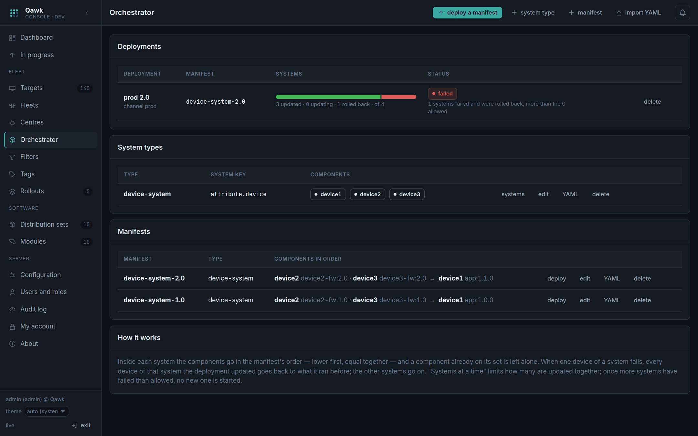
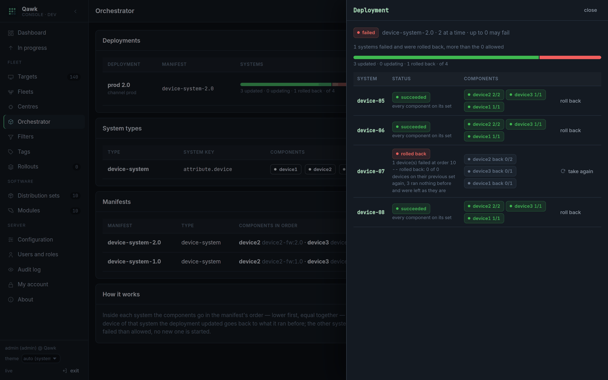
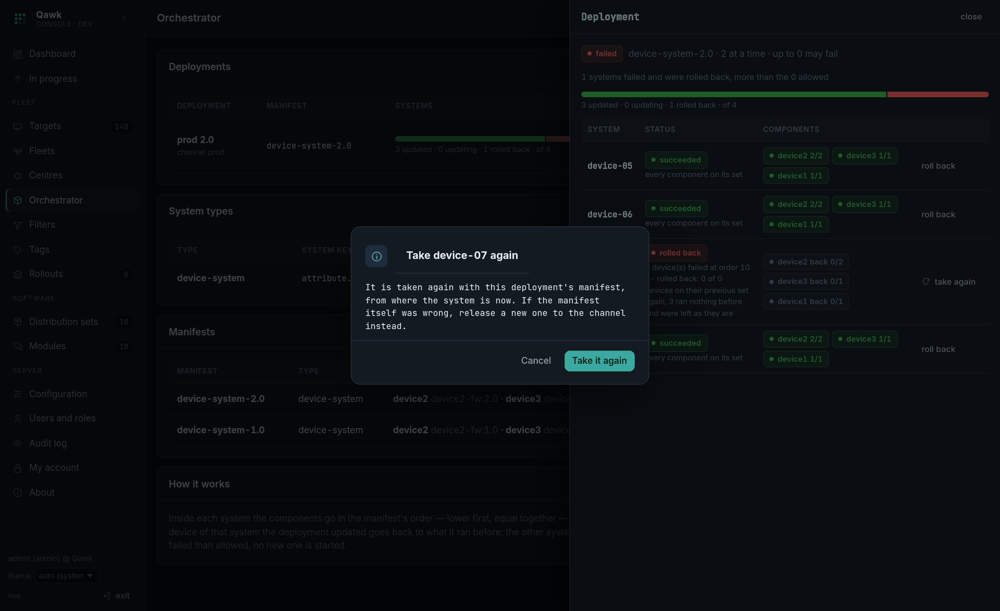

The orchestrator: systems updated as a whole
Some machines only make sense together. A lane computer and the two terminals bolted to it are one machine to the person using them and three targets to hawkBit. Update them separately and you get a version pair that was never tested; update one and fail, and you get a lane that does not score. The orchestrator treats them as one thing.
The problem it solves
A channel's release is one distribution set for every member. That works until the members are not alike. A lane computer runs the application; the terminals under it run their own firmware; the score display runs a third thing. They must move to matching versions, in an order that does not leave the lane broken in between, and if any one of them fails they must all go back — because a lane on half of version 2 is worse than a lane on all of version 1.
hawkBit has no answer for this. Mender Orchestrator does, by running an orchestrator process on one device of each system. Qawk does the same thing on the server, over devices that stay ordinary hawkBit targets.
Nothing changes on the devices. They keep speaking plain hawkBit DDI, they keep being ordinary targets, and they do not know they are part of a system. All the ordering, the waiting and the rolling back happens server-side. That means you can put existing devices into a system without touching their software.
Three pieces
| Piece | Mender calls it | Says |
|---|---|---|
| System type | topology | What components a system has, and how a device declares which system it is in. |
| Manifest | manifest | What each component should run, and in what order. |
| System deployment | — | Applying a manifest to some systems, a few at a time. |
The system type (topology)
A system type names its components, each with a query recognising the devices that fill it, and names the field a device carries to say which system it is in. Every distinct value of that field is one system.
curl -u admin:$PW -X POST -H 'Content-Type: application/json' -d '{
"name": "device-system",
"systemKey": "attribute.device",
"groupKey": "attribute.centerid",
"components": [
{"componentType": "device1", "match": "attribute.device_type==device1"},
{"componentType": "device2", "match": "attribute.device_type==device2"},
{"componentType": "device3", "match": "attribute.device_type==device3"}
]}' $Q/qawk/v1/systemtypesSo a device reporting device=device-07 and
device_type=device2 is the device2 component of system
device-07. Four such devices with the same device value
are one system of four.
systemKey can be an attribute. the device reports or a
metadata. you set from the console — useful when the devices cannot
be made to report it. groupKey says which centre the system is in;
left out, the centre setting is used.
What systems actually exist
You never create a system. You ask what the devices say:
curl -u admin:$PW "$Q/qawk/v1/systemtypes/1/systems"{"total": 2, "content": [
{"system": "device-07", "devices": 4, "components": {"device1": 1, "device2": 2, "device3": 1},
"group": "c01", "fleet": "beta", "mixed": false},
{"system": "device-08", "devices": 3, "components": {"device1": 1, "device2": 2},
"group": "c01", "fleet": null, "mixed": true}
]}mixed matters. It means the system's devices are not all in
the same channel. The orchestrator leaves such a system alone — it will not
push prod's manifest into a system half of which is still in beta. This is usually
momentary, while a centre is being moved, and it resolves itself; if a system stays
mixed, one of its devices is somewhere it should not be.
The manifest
A manifest is the state a system type should reach: for each component a distribution set and an order. Lower goes first; equal orders go together.
curl -u admin:$PW -X POST -H 'Content-Type: application/json' -d '{
"name": "device-system-2.0",
"systemTypeId": 1,
"components": [
{"componentType": "device2", "distributionSetId": 11, "order": 1},
{"componentType": "device3", "distributionSetId": 12, "order": 1},
{"componentType": "device1", "distributionSetId": 10, "order": 2}
]}' $Q/qawk/v1/manifestsHere the terminals and the display go first, together, and the lane computer goes second — because the new application expects firmware that is already there. Getting that order backwards is exactly the failure the orchestrator exists to prevent, so it is worth thinking about once and then writing down.
Orders run 1 to 1000. A component already on its set is left alone: a manifest is a destination, not a script, so applying it twice does nothing the second time.
Running a deployment
A system deployment applies a manifest to systems. Created as a draft — nothing moves until you start it.

curl -u admin:$PW -X POST -H 'Content-Type: application/json' -d '{
"name": "prod 2.0",
"manifestId": 3,
"fleetId": '$PROD',
"groups": ["c03", "c04"],
"maxParallel": 4,
"maxFailed": 1,
"byCentre": true
}' $Q/qawk/v1/systemdeployments
curl -u admin:$PW -X POST $Q/qawk/v1/systemdeployments/51/start| Setting | Does |
|---|---|
fleetId | Only systems whose devices are all in this channel. |
groups | Only these centres, in this order. Empty: every centre, by name. |
systems | Only the systems you name. Empty: all in scope. |
maxParallel | Systems under way at a time. |
maxFailed | Systems that may fail before no new one is started. |
byCentre | One centre at a time: the next starts when every system of the last is done. |
What happens inside one system
- It is photographed. Its devices are recorded, with what each is running right now. That snapshot is what a rollback goes back to, so it must be taken before anything moves.
- The first order goes out. Every device at that order is given its set. Devices already on it are skipped.
- It waits. Nothing at the next order is sent until every device at this
one has reported
finished. - The next order. And so on, until there are none left.
- Done. Every component is on its set.
Other systems run in parallel up to maxParallel, independently. One
system's trouble is its own.
Pause, resume, abort
Pause stops the engine following it; devices already sent a set finish what they were given. Abort skips the systems not yet started and leaves the ones under way to finish — aborting does not tear a half-updated system apart. If that is what you want, roll it back explicitly.
Rollback
When a device of a system fails, the whole system goes back: every device of it that this deployment updated is given again the set it was running when the system was photographed.
3 device(s) failed at order 1 -- rolled back: 3 of 3 devices on their previous set againMeanwhile the other systems carry on. Only when more systems fail than
maxFailed allows does the deployment stop starting new ones, and
end as failed.
Rolling one back by hand
For a system that is running or has already finished — the update worked but the lane is misbehaving:
curl -u admin:$PW -X POST -H 'Content-Type: application/json' \
-d '{"reason": "lane 7 is not scoring"}' \
$Q/qawk/v1/systemdeployments/51/runs/700/rollbackA device that ran nothing before is left as it is. There is nothing to go back to, and inventing something would be worse than leaving it. The deployment says so in its reason: "n ran nothing before and were left as they are".
A system rolled back. Now what?
This is the situation that matters, so it gets its own section. A lane computer with two terminals and a display: the terminals and the display go first, and if they are fine the lane computer follows. The lane computer fails. The whole system goes back to what it ran before, and it now sits on the old version while the rest of the fleet is on the new one.

device-07 rolled back and says why;
the deployment itself is failed, because more systems failed than it
allowed.1. Read what it says before you touch anything
The run's reason is written for this moment. It tells you three things:
1 device(s) failed at order 10 -- rolled back: 0 of 0 devices on their
previous set again, 3 ran nothing before and were left as they are- Which order failed. Order 10 is the terminals, order 20 the lane computer. That alone usually says whether the problem is the firmware or the application.
- How many went back. "0 of 0 … 3 ran nothing before" means those devices had never installed anything through Qawk, so there was nothing to go back to and they were left alone. On a fleet that has been updated before you will see "3 of 3 devices on their previous set again".
- Whether any device failed to go back — the worst case, and it is called out separately.
Then open the device itself (Targets → the controller id) and read what it reported. The orchestrator only knows the update failed; the device knows why.
2. Decide which of two situations you are in
Everything that follows turns on this one question, and getting it wrong is the only way to make things worse:
| If… | Then | Do |
|---|---|---|
| The update itself is fine — the machine was off, the disk was full, the network dropped, one device is faulty | Nothing needs rebuilding. The system just needs another go. | Take it again (below). |
| The update is wrong — the build is bad, the versions in the manifest do not go together | Retrying would fail again, and on more systems if you let it. | Fix the build, release a new manifest (below). Do not retry. |
The quick test: did other systems succeed with this same manifest? On the screenshot above, three did. That makes it a problem with that one system, not with the manifest — so a retry is the right move. If every system rolled back, the manifest is the suspect.
3a. Take one system again
Press take again on the row.

What happens:
- The run goes back to pending and the deployment, if it had finished or failed, is running again for this one system.
- The system is photographed afresh: its devices and what each is running now are recorded again. So if it rolls back a second time, it goes back to where it actually is — not to where it was before the first attempt.
- The deployment's own manifest is used again, not whatever the channel has moved on to since.
- That run no longer counts as failed, so
maxFailedstops blocking the rest.
curl -u admin:$PW -X POST -H 'Content-Type: application/json' \
-d '{"reason": "lane 7 PSU replaced"}' \
$Q/qawk/v1/systemdeployments/51/runs/700/retryIf the deployment's release was halted, the channel is still halted. Taking a system again restarts the orchestrator, not the release. Go to Fleets and press resume on the channel as well. Two separate decisions, deliberately: one says "this system is worth another go", the other says "this release is safe to keep sending".
3b. Fix the build and release a new manifest
When the update itself was wrong, retrying the same manifest just fails again. Instead:
- Fix the build and upload it as a new distribution set —
app:2.0.1, not a replacement forapp:2.0. Versions that change meaning are how you lose track of what is where. - Make a new manifest pointing at it, keeping the same orders.
- Release it to the channel — set and manifest together. A fresh system deployment starts, and every system in the channel is in scope again, including the one that rolled back: it is a new deployment, with a new photograph.
- Let the pipeline do its job. Send it to dev first. The whole point of having a pipeline is that a bad build gets caught in a channel where it is cheap.
4. Make sure nothing was left behind
The check worth doing before you call it done. A system that rolled back is left alone by design, so it will not fix itself:
- Fleets — the channel says how its systems ended: "15 of 16 systems updated, 1 rolled back". A number other than zero after "rolled back" is a system still on the old version.
- Orchestrator — the deployment's bar shows the rolled-back share in red, and the drawer names the system.
- Alert on
qawk_fleet_releases_halted > 0(Operations). A halted release is Qawk saying it will not continue without a person; if nobody is told, the channel simply stops updating, quietly.
What never happens on its own
Worth being explicit, because the absence of these is deliberate:
- A rolled-back system is never retried automatically. A device that fails every time would be retried for ever, rolling the same system back and forth. Somebody decides.
- A halted release never resumes itself.
- An aborted deployment does not restart because a centre moved or a system joined.
Everything else — a centre moved into the channel, a system that was split across channels while its devices were moving, a system registering for the first time — is picked up automatically, on the next pass. See below.
Releases through the orchestrator
This is how the orchestrator is used in practice. Rather than starting deployments by hand, a channel's release carries a manifest: the set goes to the devices that stand alone, and the orchestrator takes the channel's systems with the manifest — automatically, and again down the pipeline on every promotion.
# how this channel's orchestrator works
curl -u admin:$PW -X PUT -H 'Content-Type: application/json' \
-d '{"orchestrator": {"maxParallel": 4, "maxFailed": 1, "byCentre": true, "centres": ["c01","c02"]}}' \
$Q/qawk/v1/fleets/$BETA
# a release with both halves
curl -u admin:$PW -X PUT -H 'Content-Type: application/json' \
-d '{"distributionSetId": '$SET', "manifestId": '$MANIFEST'}' $Q/qawk/v1/fleets/$DEVFrom there:
- Promotion brings the manifest along.
"orchestrator": falsein the promotion leaves it behind. - The release completes only when both halves do — the standalone devices on the set, and the orchestrator finished with the systems.
- The next gate checks both. A release cannot leave a channel whose systems it never reached.
- Too many systems failing halts the release, the same way too many devices failing does.
The orchestrator follows the channel
A channel's orchestrator does not decide once which systems it takes. It asks again on every pass, the same way the channel's set keeps reaching new members:
- a centre moved into the channel after the release started has its systems taken;
- a system that was
mixedwhile its centre was still moving is picked up once its devices are all in; - a system whose centre left the channel before the orchestrator reached it is given up rather than updated;
- a deployment that had finished reopens when systems arrive, and the release reopens with it.
A deployment stopped on purpose (paused, aborted) or stopped by its own failures stays stopped. A centre moving does not restart something a person decided to stop.
Mender YAML, in and out
Topologies and manifests import and export as Mender's YAML, so tooling written
for Mender Orchestrator is not wasted. Qawk adds two keys to the topology —
qawk_system_key and, per component, qawk_match — because
Mender identifies components on the device and Qawk has to find them among
targets.
api_version: mender/v1
kind: topology
system_type: device-system
qawk_system_key: attribute.device
qawk_group_key: attribute.centerid
components:
- component_type: device1
qawk_match: attribute.device_type==device1
- component_type: device2
qawk_match: attribute.device_type==device2api_version: mender/v1
kind: manifest
name: device-system-2.0
system_types_compatible:
- device-system
component_types:
device2:
artifact_name: device2-fw:2.0
update_strategy: { order: 1 }
device1:
artifact_name: app:2.0
update_strategy: { order: 2 }curl -u admin:$PW -X POST -H 'Content-Type: application/yaml' \
--data-binary @topology.yaml $Q/qawk/v1/systemtypes/import
curl -u admin:$PW -X POST -H 'Content-Type: application/yaml' \
--data-binary @manifest.yaml $Q/qawk/v1/manifests/import
curl -u admin:$PW $Q/qawk/v1/systemtypes/1/topology.yaml
curl -u admin:$PW $Q/qawk/v1/manifests/3/manifest.yamlartifact_name is a distribution set, name:version — or
a name alone for its newest version. A component with no
update_strategy goes in the first order. Importing the same topology
or manifest again updates it rather than failing on the duplicate name, so
an import can run in CI on every change.
Where this differs from Mender Orchestrator
| Mender | Qawk | |
|---|---|---|
| Runs on | a device of each system | the server |
| Devices need | the orchestrator installed | nothing — plain hawkBit clients |
| Components found by | an interface on the device | a target query (qawk_match) |
| Rollback | on the device | re-assigning the previously installed set |
| Scoped by | the system | the system, plus channel and centre |
API
Create a system type, list the systems found, create a manifest, create a deployment, start it, roll one system back.